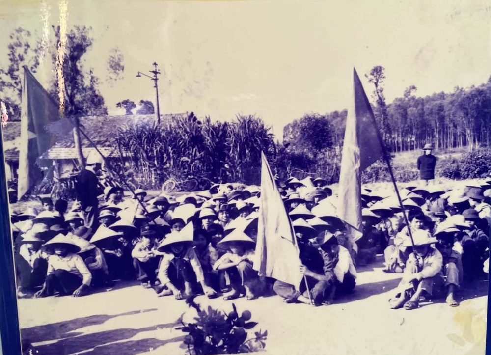
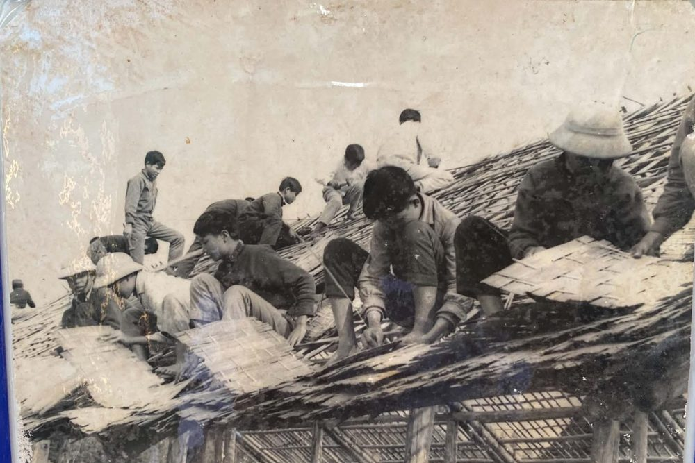
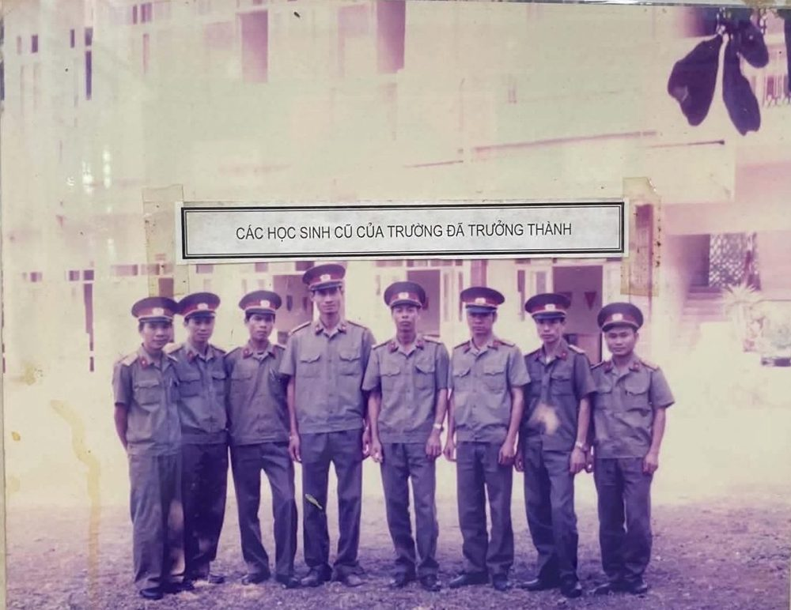
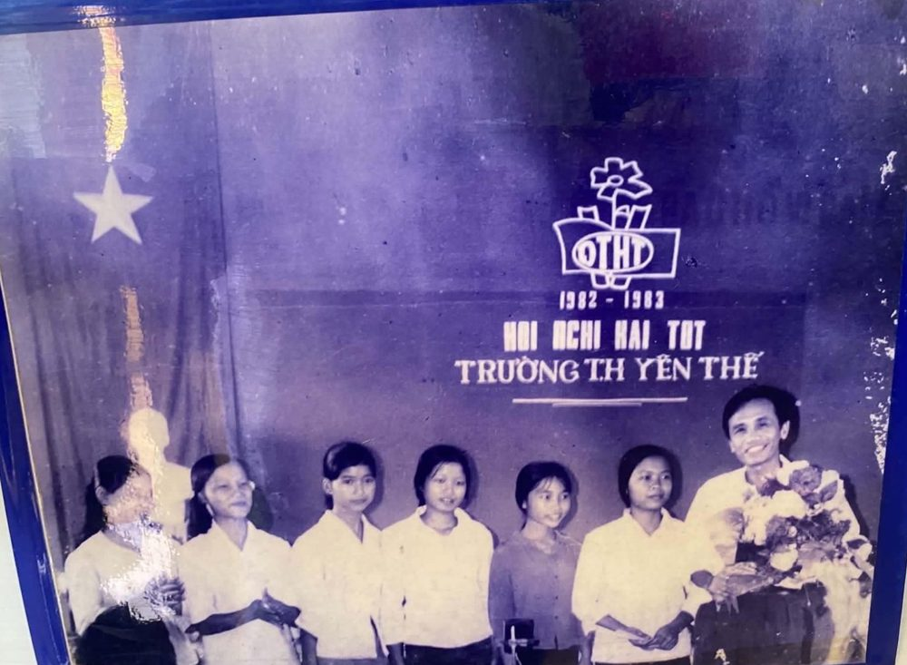
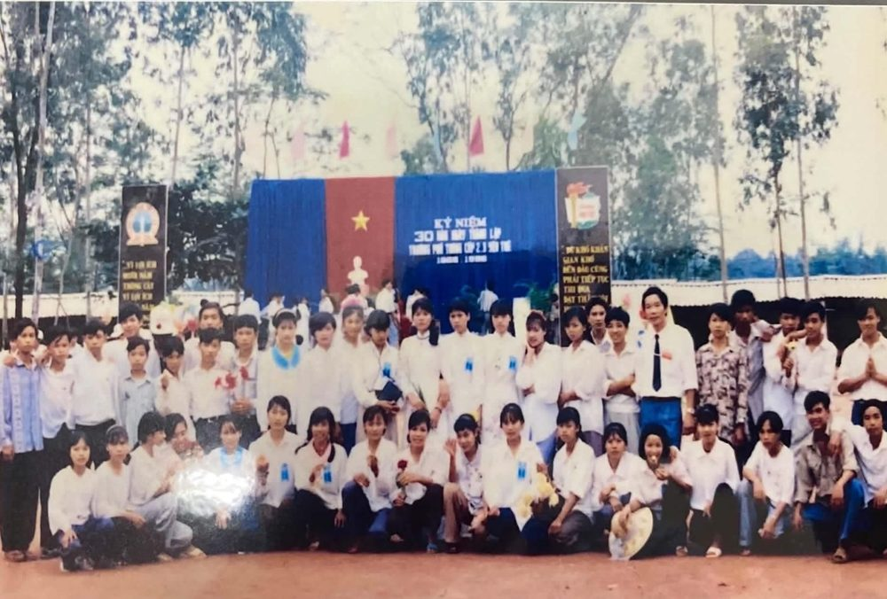
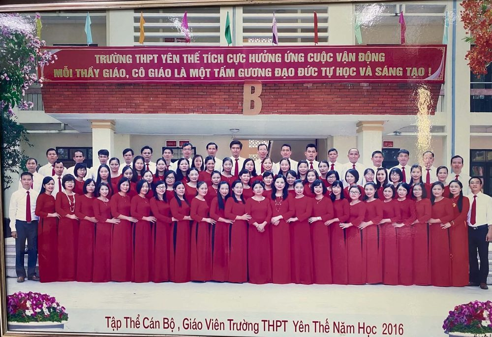
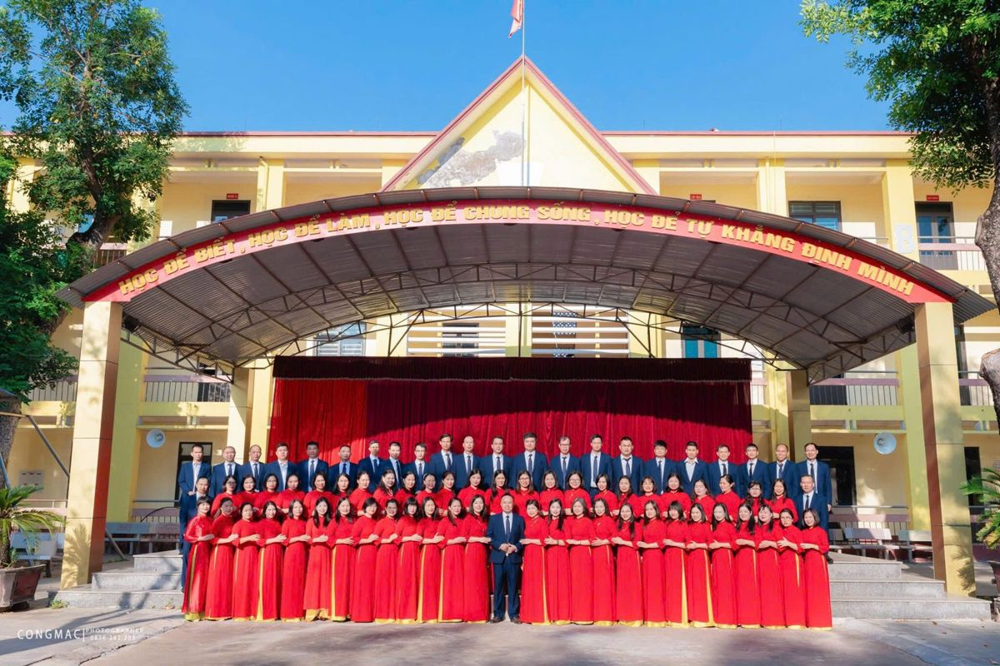

Học sinh tập trung dưới cờ, ảnh phòng truyền thống1966
Trường cấp 3 Yên Thế ra đời
Tháng 9, tỉnh Hà Bắc cho phép lập trường trên đồi Đồn Hố Chuối, xã Phồn Xương. Trường có 4 lớp và 10 thầy cô, hiệu trưởng là thầy Nguyễn Quang Bích.
Thước phim kí ức
Từ bốn lớp học dựng trên đồi Đồn Hố Chuối năm 1966 đến ngôi trường của hơn 1.200 học sinh hôm nay. Sáu mươi năm, kể lại như một thước phim.
Cuộn xuống để cuốn phim chạy. Mỗi khung hình là một mốc của trường.

Học sinh tập trung dưới cờ, ảnh phòng truyền thốngTháng 9, tỉnh Hà Bắc cho phép lập trường trên đồi Đồn Hố Chuối, xã Phồn Xương. Trường có 4 lớp và 10 thầy cô, hiệu trưởng là thầy Nguyễn Quang Bích.

Thầy trò lợp mái lớp học, ảnh phòng truyền thốngSau một năm vừa học vừa làm, cụm lớp nửa chìm nửa nổi hình thành trên khu đồi dài hơn một cây số, nối nhau bằng giao thông hào dẫn tới hầm chữ A.
Hai học sinh Nguyễn Thị Minh Đức và Hoàng Thảo Nguyên đoạt giải quốc gia môn Văn, giữa những ngày kẻng báo động còn vang trong giờ học.

Các học sinh cũ của trường đã trưởng thànhThứ trưởng Bộ Giáo dục Lê Chưởng về thăm và khen công tác giữ an toàn cho thầy trò. Nhiều thầy cô, học sinh rời trường lên đường nhập ngũ.
Hết năm học 1978 – 1979, trường rời Hố Chuối về thị trấn. Lớp học gạch ngói được dựng theo tinh thần Nhà nước và nhân dân cùng làm.

Hội nghị hai tốt, năm học 1982 – 1983Dạy tốt, học tốt. Tấm ảnh còn giữ ở phòng truyền thống ghi lại hội nghị năm học 1982 – 1983 của trường.
Năm học 1987 – 1988 trường có hai giải học sinh giỏi Văn quốc gia. Phân hiệu Bố Hạ mở ngay sau đó và tách thành trường riêng năm 1991.

Lễ kỷ niệm 30 năm thành lập trườngPhần thưởng cao quý đầu tiên của trường. Một năm sau, dãy nhà 3 tầng với 18 phòng học kiên cố được khởi công.
Trường được công nhận đạt chuẩn quốc gia, với 30 phòng học kiên cố, phòng thí nghiệm, phòng tin học và nhà đa năng.

Tập thể cán bộ, giáo viên năm học 2016Trường đón nhận Huân chương Lao động hạng Nhì trong lễ kỷ niệm 50 năm.
27 giải trong kỳ thi chọn học sinh giỏi cấp tỉnh, trong đó có 7 giải Nhất, dù điểm đầu vào lớp 10 chỉ khoảng 5 điểm mỗi môn.
Công trình mới giúp trường hoàn thiện tiêu chuẩn trường chuẩn quốc gia mức độ 2.

Tập thể cán bộ, giáo viên nhà trườngĐứng đầu tỉnh về học sinh giỏi văn hóa, nhất toàn đoàn hội thao quốc phòng an ninh, và có một á khoa toàn quốc khối A01.
Vài con số làm nên niềm tự hào của trường, lấy từ trang giới thiệu và báo cáo của nhà trường.
Năm học 2025 – 2026, trường xếp thứ nhất toàn tỉnh về học sinh giỏi văn hóa, với 4 giải Nhất và 12 giải Nhì.
Kỳ thi năm 2026 có 6 điểm 10 và 18 học sinh đạt từ 25 điểm trở lên.
Nhất toàn đoàn, và góp 14 giải ở hội thao toàn quốc.
Hạng Ba năm 1996 và hạng Nhì năm 2016, cùng Bằng khen của Thủ tướng Chính phủ năm 2012.
Ba, bốn thế hệ thầy trò cùng đứng dưới một mái trường.
Tính đến năm 2021, với 27 giải trong kỳ thi năm đó.
Lời kể của những người đã sống cùng ngôi trường từ ngày đầu. Bản chính thức sẽ dẫn tới bài viết đầy đủ trên cổng thông tin của trường.
“đầy ắp tiếng cười, tình người, tình thầy trò”
Cô kể về những năm học dưới mái tranh ở Hố Chuối: nghèo, đơn sơ, nhưng không ai bỏ học.
Nhà giáo Nguyễn Thị ChiếnHọc sinh khóa đầu tiên 1966 – 1969, nguyên Quyền Hiệu trưởng
“tình người, tình đồng nghiệp, nghĩa thày trò”
Thầy nhớ thời ăn không đủ no, phấn không đủ viết, và nói đó là thứ duy nhất trường luôn có đủ.
Nhà giáo Chu Bá VinhHiệu trưởng 1988 – 1999
Những tấm ảnh cũ đang được giữ ở phòng truyền thống của trường, chụp lại nguyên khung. Bấm vào ảnh để xem lớn.
Không chỉ miệt mài trên bục giảng, các thầy cô còn là người truyền cảm hứng và dìu dắt chúng em trưởng thành. Đây là lời học sinh lớp 12A8 viết về thầy cô của mình. Bấm vào ảnh để xem ảnh khác.
Cô luôn mang theo nụ cười và năng lượng tích cực, trên lớp cũng như ngoài đời. Cô giảng dễ hiểu, logic, và biết khơi gợi niềm yêu thích Tiếng Anh ở từng học sinh. Những lúc gặp khó khăn, chúng em đều có thể tìm đến cô để chia sẻ.
Thầy gần gũi và ấm áp như một người anh lớn. Mỗi khi thầy bước vào lớp với nụ cười tươi, không khí học tập nhẹ hẳn đi. Thầy giải thích dễ hiểu, kiên nhẫn trả lời mọi câu hỏi và luôn dành thêm thời gian cho những bạn còn gặp khó.
Thầy là người góp phần gây dựng phong trào thể dục thể thao của trường. Qua từng giờ tập, thầy rèn cho chúng em thể lực, ý thức kỷ luật, tinh thần đoàn kết và sự kiên trì.
Cô say mê chuyên môn và luôn tìm cách đổi mới giờ dạy: thiết kế bài tập trực tuyến, đưa công nghệ vào kiểm tra và đánh giá. Cô khơi dậy ở học sinh niềm thích khám phá khoa học và khả năng tự học.
Cô truyền kiến thức lịch sử bằng tất cả tâm huyết và sự nhiệt tình. Cô chăm lo xây dựng một lớp học hạnh phúc, nơi học sinh được khuyến khích phát triển toàn diện.
Trên bục giảng, cô nghiêm khắc và nguyên tắc: mỗi lần kiểm tra miệng, cả lớp hồi hộp như tim muốn nhảy ra ngoài. Ra khỏi giờ học, cô lại dịu dàng, gần gũi, sẵn sàng trò chuyện và kể cho chúng em nghe những trải nghiệm của mình. Một người cô vừa đáng kính, vừa đáng mến.
73 thầy cô và nhân viên đang tiếp nối sáu mươi năm của trường, trong đó 15 thầy cô có bằng thạc sĩ. Danh sách theo cổng thông tin của nhà trường.
Tên các thế hệ thầy cô đi trước, chạy như bảng tên cuối phim. Bản chính thức sẽ có đủ danh sách từ nhà trường.
Hiệu trưởng đầu tiên, 1966Nguyễn Quang Bích
Những năm 1970Nguyễn Văn Hiếu
Những năm 1980Trần Hữu Duyệt
Quyền Hiệu trưởng 1987 – 1988Nguyễn Thị Chiến
1988 – 1999Chu Bá Vinh
Chờ bổ sung: giai đoạn 1999 – nayHiệu trưởng hiện nayVũ Đình Nghiệp
Nhập ngũ năm 1970Nguyễn Duy Thảo
Nguyễn Công Diễn
Đỗ Khắc Siêu
Nguyễn Ngọc Đủ
Vũ Công Toàn
Nguyễn Dương Sâm
Nguyễn Quang Luân
Lương Thị Kim Thúy
Lê Nho San
Phan Thúy Hà
Trần Hải Yến
Giáp Đức Mạnh
Giáp Thế Cường
Nguyễn Văn Chuyên
Nguyễn Thị Yến Chi
Trần Thị Kim Liên
Khóa 1972 – 1975, Anh hùng Lực lượng vũ trang nhân dânThiếu tướng Nông Văn Định
Giải quốc gia môn Văn, năm học 1970 – 1971Nguyễn Thị Minh Đức
Giải quốc gia môn Văn, năm học 1970 – 1971Hoàng Thảo Nguyên
Chờ danh sách đầy đủ từ nhà trườngTruyền thống của mái trường không chỉ viết bằng thành tích học tập mà còn được giữ qua những việc làm đẹp mỗi ngày. Bấm vào ảnh để xem lớn.
Mỗi dịp Tết, trường trao quà cho các bạn học sinh có hoàn cảnh khó khăn ngay trên sân khấu sân trường.
Thầy cô và đoàn viên quét dọn, chăm sóc nghĩa trang liệt sĩ, một cách để nhớ ơn các thế hệ cha anh.
Thảm đỏ trải giữa sân, cả trường ngồi hai bên xem các lớp trình diễn trang phục tự làm.
Xuất phát từ cổng trường, chạy dọc con đường rợp bóng cây.
Lễ kỷ niệm Ngày Nhà giáo Việt Nam 20/11 và ngày Quốc tế Phụ nữ 8/3, những dịp cả trường dành để tri ân thầy cô.
Buổi lễ cuối năm học 2022 – 2023, cũng là lễ trưởng thành của học sinh khối 12.
Báo tường các lớp làm cho dịp 60 năm. Mỗi lớp một tấm, kèm lời các bạn viết gửi thầy cô và mái trường.